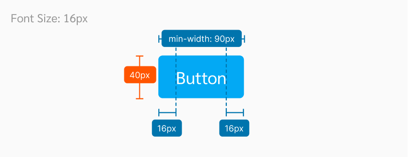
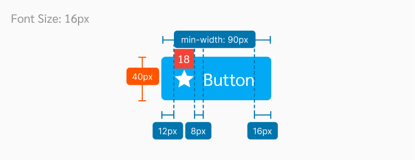

Button
ปุ่มทำหน้าที่ให้ผู้ใช้สามารถใช้งานฟังชั่นต่างๆ ของเว็บไซต์, และเลือกตัวเลือกต่างๆ ระหว่างการใช้งานได้
Button Types

| Types | Purpose |
|---|---|
| Primary | ใช้สำหรับ action ที่สำคัญที่สุดในหน้า โดยควรจะมีเพียงแค่หน้าละ 1 ปุ่มเท่านั้น เพื่อให้ user focus ที่ action หลักที่ต้องทำได้ดีที่สุด |
| Primary (Raised) | คือ Primary Button ที่ถูกเน้นให้ความสำคัญเด่นขึ้น กรณีที่ต้องวางอยู่ในหน้าที่มีของเยอะ เช่น Dashboard |
| Secondary | ใช้สำหรับ action ทั่วไปที่ต้องการให้ user กด แต่มีสำคัญรองลงมาจาก primary button |
| Tertiary | คือ ปุ่มที่ใช้สำหรับ action ที่ต้องใช้ในบางกรณี แต่ไม่ได้อยู่ใน action หลักที่ user ต้องทำ เช่น ปุ่มติดตาม/ซื้อกองทุน ในหน้ารายละเอียดกองทุน |
| Ghost | คือ ปุ่มที่ใช้สำหรับ action ที่สำคัญน้อยที่สุด หรืออยากให้ user กดน้อยที่สุด แต่ยังคงจำเป็นต้องมี เพื่อให้ใช้งานในบางกรณีได้ เช่น ปุ่ม Cancel ที่อยู่คู่กับปุ่ม Confirm ซึ่งเป็น primary button |
| FAB | เหมือนปุ่ม Primary Button (Rasied) แต่ใช้สำหรับกรณีมือถือเท่านั้น |
Spec
Button (No Icon)
Button (with Icon)
Example
The following HTML code is based off the Ahancer Seed
Primary Button
Secondary Button
Tertiary Button
Ghost Button
Usage
1. ขนาดที่ถูกต้องของปุ่ม
ขนาดของปุ่มต้องไม่ยาวเกินไป และไม่สั้นเกิน 90px โดยมี padding ซ้ายและขวาระยะ 16px
DO
หากในปุ่มมี text ยาว ให้ยึด padding ซ้ายและขวา ขนาด 16px และความสั้นของปุ่มต้องไม่น้อยกว่า min-width: 90px
DON'T
ห้ามให้ padding ซ้ายและขวาของปุ่มยาวหรือสั้นกว่า 16px
2. ขนาดที่ถูกต้องของ Icon บนปุ่ม
ขนาดของ Icon ที่ใช้ในปุ่มต้องไม่ใหญ่หรือเล็กเกินกว่าขนาด 18 x 18 px
DO
ขนาดของ Icon ในปุ่มต้องเท่ากับ 18 x 18 px เท่านั้น และให้ Icon ห่างจากขอบ 12px ห่างจาก text 8px
DON'T
ห้ามใช้ Icon ขนาดเล็กกว่าหรือใหญ่กว่า 18 x 18 px
3. ในหนึ่งหน้าจอ ควรมี Primary Button เพียงอันเดียว
ในทุก ๆ หน้าควรจะมี Primary Button เพียงอันเดียว เพื่อแสดงให้เห็นถึง Action ที่สำคัญที่สุดที่ต้องการให้ User ทำ
DO
ตอน Design หน้าควรมี Primary Button เพียงแค่หน้าละ 1 ปุ่มเท่านั้น เพื่อให้ user focus ที่ action หลักที่ต้องทำได้ดีที่สุด
DON'T
ยกตัวอย่าง เช่น หากหน้า Home มี Primary Button หลาย ๆ ปุ่ม อาจจะทำให้ User สับสนหรือไม่เข้าใจว่าควรจะทำอะไรก่อน
4. คำที่ใช้ในปุ่ม ควรเป็นคำที่บ่งบอกถึง Action นั้นๆ ว่ากดแล้วจะเกิดอะไรขึ้น
ใช้ text ให้สื่อความหมายถึง Action ของปุ่มนั้น ๆ อย่างชัดเจน เช่น ปุ่ม “เพิ่มกองทุน” และ ปุ่ม “ข้อมูลเพิ่มเติม”
DO
ใช้ชื่อปุ่มให้สื่อความหมายอย่างชัดเจน เช่น ปุ่ม “เพิ่มกองทุน” และ ปุ่ม “ข้อมูลเพิ่มเติม”
DON'T
หากมี Action ที่ User ต้องตัดสินใจ ชื่อปุ่มควรทำให้ User เข้าใจ Action นั้นอย่างชัดเจน จากตัวอย่าง ควรเปลี่ยนจาก “Yes” เป็น “Delete” เพื่อให้มีความชัดเจนมากขึ้น และหากต้องใช้ภาษาอังกฤษ ห้ามให้ ชื่อปุ่มเป็นตัวพิมพ์ใหญ่ทั้งหมด